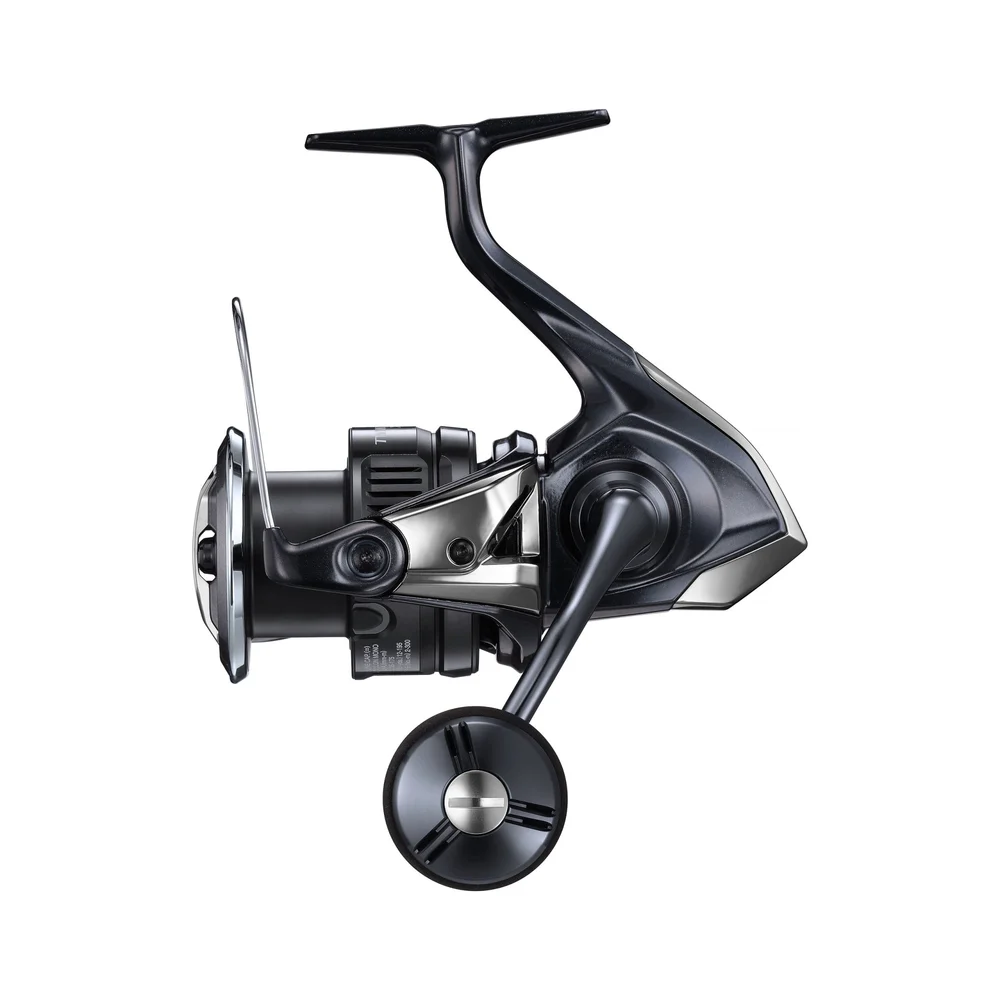

ReelCalc Reel Setup Guide
Shimano Twin Power XD FB C5000XG Line Capacity & Reel Setup Guide
The Shimano Twin Power XD FB C5000XG (TPXDC5000XGFB) is a 5000-size spinning reel. MGL Rotor uses lightweight CI4+ construction for easy start-and-stop retrieves, while Anti-Twist Fin helps keep slack line from dropping below the spool. For fishing in current, allow enough line for your cast or drift with some left for a fish's run. The calculator below is set up for this exact reel: estimate a full spool of your chosen main line, or add backing underneath a shorter amount.